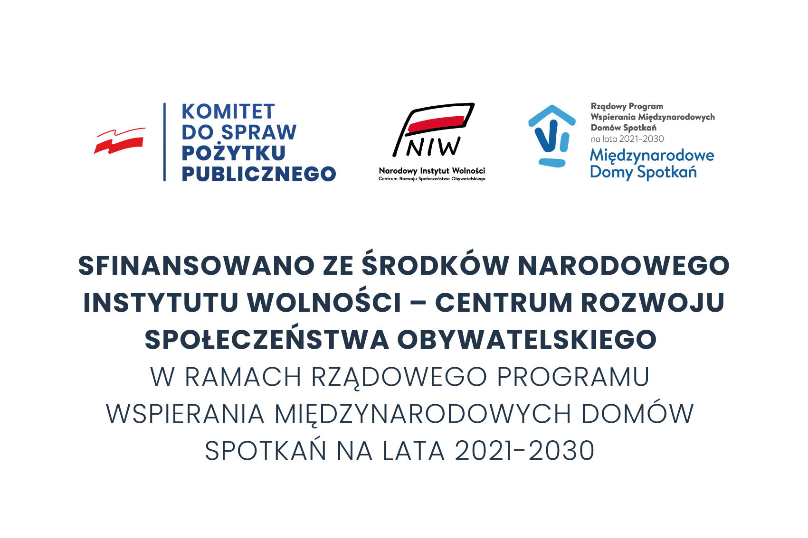

Nowe FIO
Fundacja Zdrowe Miasto i Narodowy Instytut Wolności - CRSO, w latach 2022 - 2024 realizuje projekt "Partycypacyjna Akademia Seniorów z województwa Podlaskiego". Celem głównym tego projektu jest wzrost aktywności obywatelskiej i społecznej, edukowanie i animowanie lokalnych społeczności seniorów do tworzenia i realizacji działań partycypacyjnych, dzięki zapewnieniu im rozbudowanego i kompleksowego wsparcia doradczego, szkoleniowego i aktywizującego, dopasowanego do zdiagnozowanych potrzeb i oczekiwań tej grupy, co zaowocuje zwiększeniem ich aktywności w życiu społecznym i publicznym, a także wzmocnieniem więzi, poczucia wpływu i sprawczości. Działania te zostaną przeprowadzone za pomocą 4 aspektów:
- Szkoleń kompetencji cyfrowych – nabycie kompetencji cyfrowych umożliwiające pełniejsze zaangażowanie się seniora w życie społeczne, (ale również „wabik” do zainteresowania się projektem; (szczegółowy opis tematyki w działaniach).
- Szkolenia partycypacyjna - nabycie wiedzy i kompetencji odnośnie lidera środowiska lokalnego, świadomie aktywizującego i kreującego swoją społeczność lokalną, Podczas zajęć z ekspertem uczestnicy dowiedzą się podstaw prawnych odnośnie relacji obywatel - władza. Dodatkowo poznają wiedzę na temat "ścieżek" załatwiania spraw z jednostkami administracji, czynności zapytań, Poznają jak działa Biuletyn Informacji Publicznej oraz do czego można go wykorzystać (szczegółowy opis tematów w działaniach).
- Akademia Partycypacji, Aktywizacji Seniorów, Emerytów i Rencistów (PASER) – Akademia PASER skierowana jest do osób w wieku powyżej 60-go roku życia. Będzie ukierunkowana na wspieranie rozwoju kompetencji liderskich uczestników, na kreowanie postaw obywatelskich, a także umiejętność nawiązywania współpracy z innymi liderami, organizacjami czy instytucjami publicznymi. Uczestnicy, dzięki wsparciu wykwalifikowanej kadry, będą włączać się aktywnie w działania na rzecz lokalnej społeczności, a także, dzięki zdobyciu kompetencji liderów partycypować w działaniach oddolnych. Efektem pracy Akademii będzie organizacja i realizacja szeregu działań oddolnych odnoszących się do roli seniora w społeczności lokalnej - przez zapytania o informację publiczną, kontakt z przedstawicielami rad i urzędów, kończąc na zgłaszanych projektach obywatelskich i projekcie (może więcej niż 1) zgłoszonym do budżetu obywatelskiego.
- Biała Księga Praktyk. Stworzenie analizy problemów i rozwiązań związanych z niskim poziomem uczestnictwa osób 60+ na podstawie pracy Akademii i działań badawczych podczas trwania projektu. Przygotowując wniosek zdaliśmy sobie sprawę z bardzo małej analizy potrzeb, problemów i możliwości związanych z partycypacją i rolą seniorów w kształtowaniu społeczeństwa obywatelskiego. Wnioski wyciągnęliśmy z materiałów ogólnopolskich, doświadczeń własnych, analizy wywiadów z przedstawicielami grupy. Przyjęliśmy założenie, iż brak materiałów źródłowych, jest sam w sobie "potwierdzeniem problemu". W 2022 roku zrealizowaliśmy część warsztatową - z kompetencji cyfrowych i partycypacyjnych. Wzięło w nich udział odpowiednio - 220 i 120 osób. Więcej szczegółów na temat projektu znajda Państwo pod adresem: https://www.facebook.com/AkademiaPASER.
Projekt sfinansowano ze środków Narodowego Instytutu Wolności - Centrum Rozwoju Społeczeństwa Obywatelskiego w ramach rządowego programu FUNDUSZ INICJATYW OBYWATELSKICH NOWEFIO na lata 2021 - 2030